I partnered with Matthew Viator from Studio V, a piano and musicology studio based in Washington DC, to design a new website. Matthew’s studio has evolved into a highly academic and well-known piano studio in DC since its founding about 5 years ago, but needed to rebrand its web presence to communicate that message and attract the ideal students
Discover and Define
We started the project with a discussion over breakfast about the studio’s services, objectives, and needs1. My focus was to get a feel for the studio’s teaching style, what kind of brand image was desired, the ideal student, and understand the why behind those answers. This was purely an informative interview--I left my worldview at the door.
1client needs
- Site to feel academic, yet modern and fun.
- Include fine print terms, conditions, and studio policies
- Pricing for the various levels, without using the terms “beginner, intermediate, and advanced”
- Include a lot of written content describing his background, and the studio’s description, policies and student expectations.
- Attract students who are serious and committed
- include a Gotham and Gainsborough typeface in the design
After learning about the client needs, I began to identify the prospective user needs2. Studio V hosts a monthly social, comprised of currently enrolled students, which I attended and used as an opportunity to conduct informal research. Based on my discussions and questions to the students, I discovered the most important website needs for them were: location, pricing, and styles taught. I did inquire about their thoughts on the Studio’s previous website3, which included neither the needs listed, nor a logo, location, or studio images. Students noted that the previous site did include studio policies and expectations, which they found helpful, but that they found the formatting confusing.
2user needs
- Location
- Pricing
- Styles Taught
- Review
3clients previous site
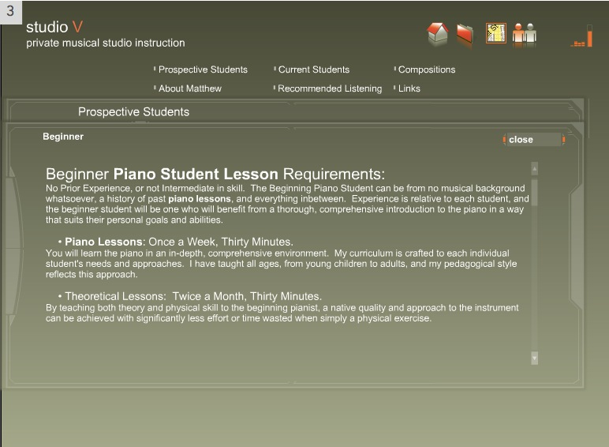I returned to the client to discuss my findings, reservations, and confirm [agreement on] the edited written content. First, I proposed that the client consider revising the pricing terminology to be titled with “beginner, intermediate, and advanced” vs. “proficient, technical, and professional.” I was concerned for two reasons: 1) That the user would be confused about what pricing was appropriate for them and 2) That the terminology would affect search engine optimization (SEO) in a negative way, as a common user search would be “Beginner piano lessons Washington DC”. The client understood it was confusing, and shared concern of the SEO risk, but was firm on the titles. He agreed to include beginner, intermediate, and advanced as descriptive terms, as long as they were not used as titles to the categories. Secondly, I formatted and revised the written content for the studio’s welcome, personal bio, lesson description, and studio policies. The client had lengthy policies with fine print details that were required to be on the site, so to make them more digestible to the reader, I reformatted the lesson policy and pricing policy sections. Once the client approved these proposed edits, the written content was ready. I then set up during studio hours in order to gather as much site collateral as possible prior to diving into design sketches.


Design and Develop
To begin my design strategy, I identified themes, sections, and navigation architecture4 from the written content. One of the key findings that influenced the final design layout is the reoccurrence of groups of three: 3 social media review links needed (Facebook, Yelp, Google+); 3 different prices (Beginner, Intermediate, Advanced); 3 contact details (location, phone, email). Once I established a content structure, I started drafting layouts one after another, sketching4 every idea I had.
The ideal sketch, it seemed, was a single page layout with a fixed navigation to the left6. I liked this design because it offered the user a convenient navigation through the information, while allowing the content to be in a 100% viewport height container(desktop version). I mocked up the design in HTML/CSS to see how it looked in the browser and the results were disappointing7, though there were some things I liked8. The navigation to the left was wasting space, the content was overwhelming on the desktop and especially in the mobile version. In addition, the fonts the client requested9 were not indicative of the studio’s desired academic, yet fun image. Since I had spent so much time designing this version, I kept trying to salvage what I had to make it better, but it just didn’t work. This experience proved to be one of my most valuable design lessons Throw away trash and start over, from the beginning.
7dissapointing results
- Logo was way too large
- Navigation to the left was an eye sore
- One page layout did not work, given the breadth and quantity of content (reviews, policies, pricing etc.)
- Typeface selections didn’t reflect the studio’s academic branding desire
8results i liked
- Palette of grey and white, with burnt orange details adding some punch
- The navigation of lessons, tuition, review, and contact sections – and in that order
9client typeface request | gainsbourgh and gotham
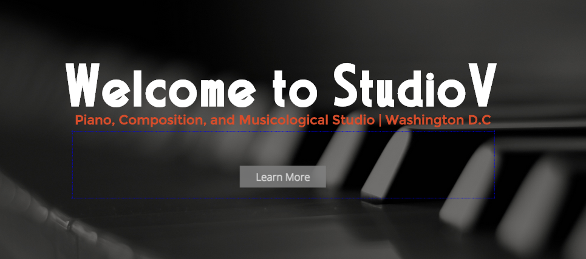Before going back to the drawing boards, I shared the challenges the requested typefaces were posing with the client, a conversation that was needed long ago. The studio primarily teaches Haydn’s work and other classical music from the 1700’s – mid 1800’s, so I suggested using typefaces that were indicative of the styles of that time, such as Baskerville and Bodani. I explained that the right typeface choices would properly represent the personality of his studio and teaching, and emphasized the extensive research and walked him through the trial and error that goes into creating outstanding typographic styling. Once the client understood and offered me full creative control, another valuable lesson was learned: Address issues sooner, not later, don’t wait!. With that, I went back to the drawing boards10 with a new perspective and a fresh start.
10back to the drawing boards
The ideal layout that evolved separated the sections into individual pages, which allowed the content to be more digestible and provided more space for the images to pop out. I worked through a number of mockups in Sketch, and then moved into HTML/CSS. The landing page11 has no confusion displaying the logo/brand of the studio, what the business offers, navigation options, and am option to learn more. The engaging opening statement is intended to offer a warm welcome to any prospective students, while the complementary background image reinforces the studio’s services. I included an auto scrolling parallaxing image gallery12 to the mobile version, which prioritized the written content, yet still offered the user imagery of the studio without taking up valuable mobile real estate. Also, I included a map API to the mobile homepage and contact page to provide easy access to students navigating to the studio via their mobile device.
11desktop landing page
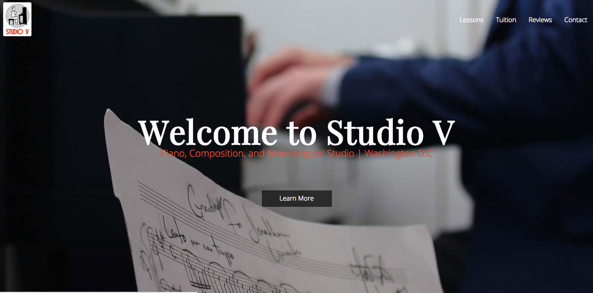12mobile picture galler
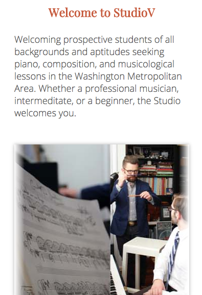13mobile navigation map
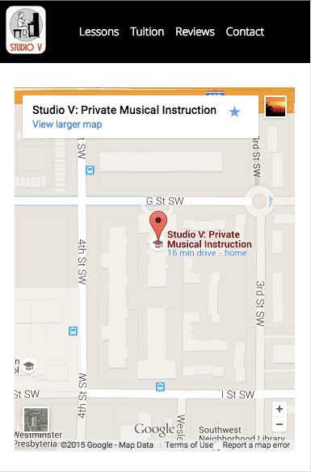The lessons page opens with an encouraging welcome about the benefits of classical music and another of the teacher’s favorite quote to add some personality and the drop cap14 add to the academic stylines. After the intro, the Studio’s styles and methods are summed up with the section titled “What Styles Will I Learn”. Earlier in my content edits I sectioned the lesson policies into chunks and styled them using small-caps 15 which allows the user to scan through quickly to review what is pertinent to them.
14welcoming drop cap
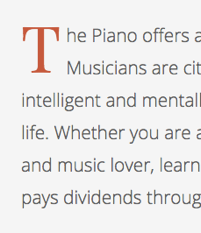15small-cap sections
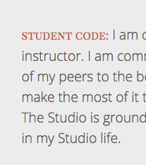Due to the pricing page’s unusual title terms16, I needed to avoid causing confusion and find a solution to convey appropriate pricing. Ultimately, the best solution was to ask, then answer the question, “Who’s this for?”. Highlighting it in the burnt orange theme color next to a description offered the user a quick understanding of what price they would fall under, in addition to the italic description of “beginner, intermediate, and advanced”.
16pricing layout
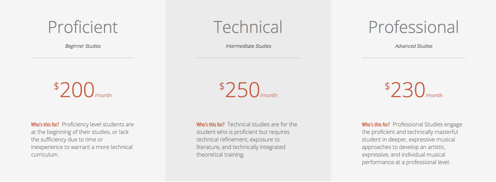When considering where to include the social media review links (Yelp, Google + and Facebook), I didn't want the links to potentially bounce users out of the site, by only adding a link to the nav-bar or footer. The solution was to add a dedicated review page to the site17, that displayed the links in the same theme of 3’s format (desktop version), in addition to a personalized review from current students of different skill backgrounds18, by design to connect and attract any prospective student with a similar skillset.
17review page
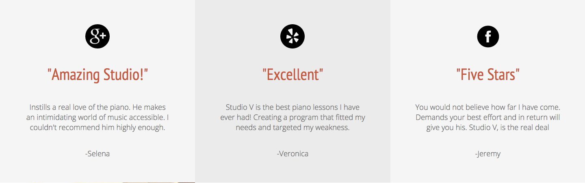18student reviews
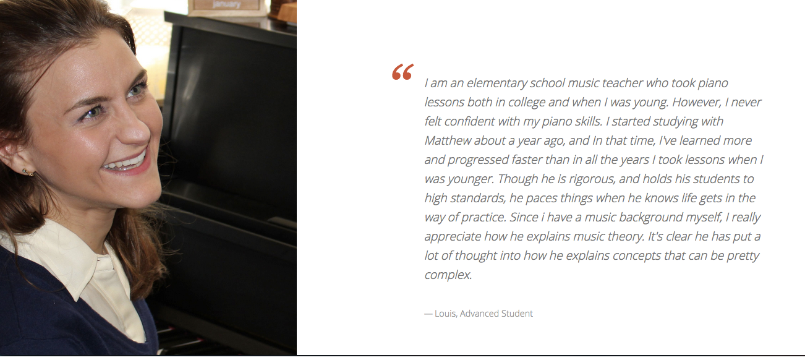Toward the later part of the development process, I wanted to get a temperature check on the overall design and usability. Reaching out to fellow designers and friends, I received some key critical findings. 1) A user reported having initial trouble going back to the home page, because there was not a link in the navigation, but eventually clicked the logo to get back. This was an oversight on my part, though the logo was linked to the homepage, all pages needed to be included in the navigation. 2) another user reported that while they liked the site design welcoming of the pages, he felt it was missing the same personal connection from Matthew, the teacher. This influenced the final design of the contact page24, including a final statement in Matthew’s words thanking the user for visiting and inviting them to get together over coffee to discuss their musical journey.
24contact page farewell
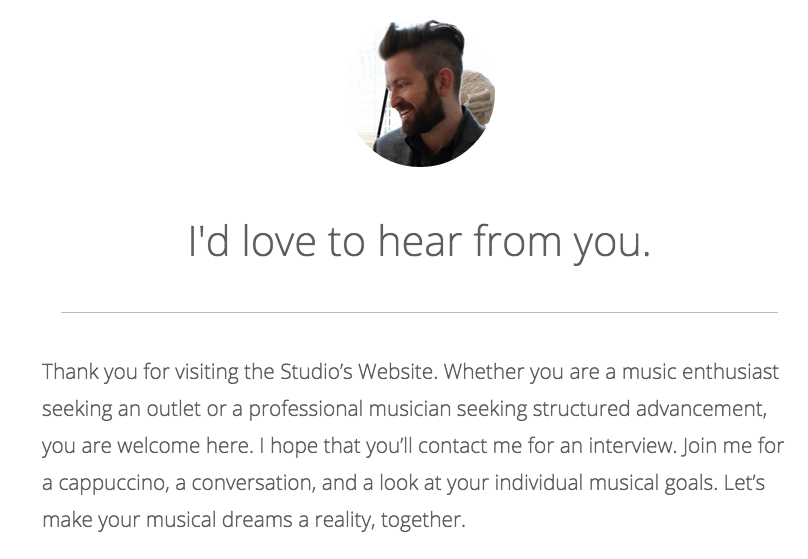Deploy and Conclude
Once the site was compatable on all browsers, mobile friendly, and passed the Wc3 check and my SEO checklist, and of course making sure the client was stoked25 - it was time to launch! I made my last commit to Git-Hub, uploaded the final files on the host, Amazon Web Services, and transferred the DNS from the client’s previous provider, and we were up and running!
*Lessons Learned
- Don’t ever be afraid to throw away bad designs and start over.
- Always seek the user’s feedback from the beginning, middle and end - listen and implement
- Continually ask why, and be certain to find out why.
- When pushing back to the client, have well thought out alternative proposals and solutions ready to present.
- Relax, and enjoy, it’s a process.
 Dupont Research
Dupont Research
The Experience